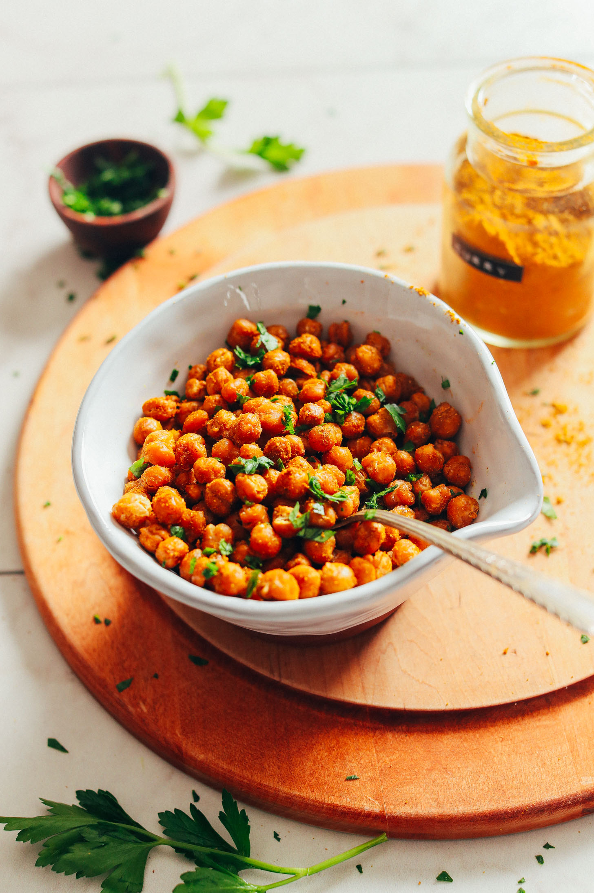

Actually Crispy Baked Chickpeas

Description
4-ingredient baked roasted chickpeas that are ACTUALLY crispy!
Simple methods, BIG flavor, so crunchy and delicious!
Plus, plant-based and gluten-free.
Ingredients
1 tsp seasonings of choice. We suggest Paprika & Curry Powder
Instructions
Preheat oven to 350 degrees F (176 C) and set out a bare baking sheet (or more, as needed).
Drain chickpeas well. If using oil, rinse well with water and thoroughly drain. If omitting oil, simply drain well and skip rinsing with water.
Once drained well, spread the chickpeas out on a clean, absorbent towel and use your hands to gently roll and dry the chickpeas. Some of the skins should start coming off. You can opt to peel all of the chickpeas – which can help for extra crispiness! – or simply remove the skins that come off. Either way, the chickpeas will crisp up. I just found that peeling them does yield slightly crispier chickpeas.
Transfer the chickpeas to a mixing bowl and top with oil (or omit) and salt. Mix well to combine. DO NOT add the other seasoning at this point – it can interrupt the crisping process, so wait to add until after baking.
Bake for a total of 40-50 minutes or until golden brown and dry/crispy to the touch. I like turning my pan around and shaking the chickpeas around at the halfway point for even cooking. Note: peeled chickpeas cook faster than unpeeled. If omitting oil, they will also cook faster.
Remove from oven and toss with seasonings (if desired) while still warm. Then let cool 5-10 minutes – they will continue crisping as they cool.
Serve as is or atop bowls or salads! To store, place in a storage container or jar and DO NOT tightly cover. Instead, crack lid so they can “breathe” a bit. I found that this helped them stay crispy longer. These are best in the first day, but they will last for 4-5 days at room temperature. Alternatively, seal well and freeze up to 1 month.